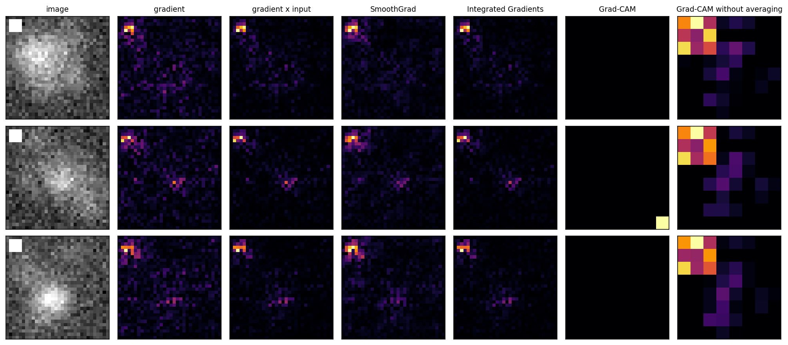
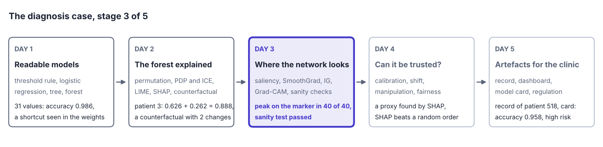
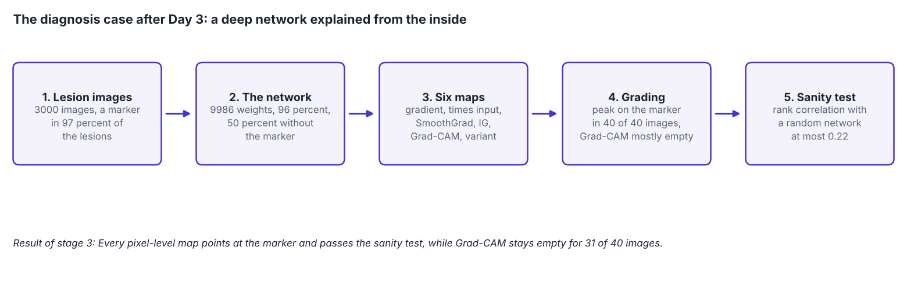
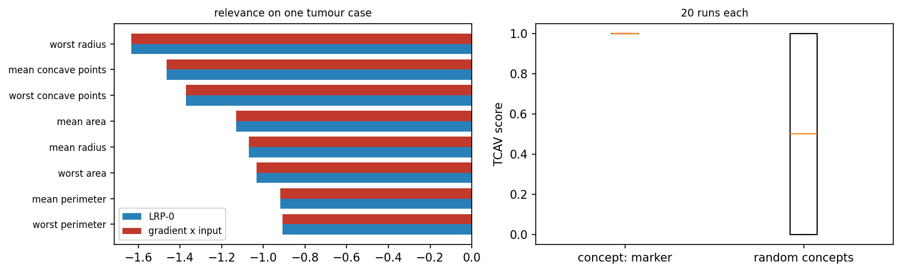

Overview
Deep networks recognise images, sound and text with an accuracy that simpler models rarely reach, and they are the least readable models of all. This day shows how to see where a network looks. It trains a small convolutional network on the lesion images of Day 1, which contain a hidden shortcut, and explains it with saliency maps [1], SmoothGrad [2], Integrated Gradients [3] and Grad-CAM, short for gradient-weighted class activation mapping [4]. Because the true reason for each label is known, the maps can be graded, and a sanity test checks whether they explain the model at all [5]. The day also introduces GEMEX, short for Geodesic Entropic Manifold Explainability, an explanation method that reports its own uncertainty [6].
Day at a glance
flowchart LR A["Looking inside a network"] --> B["Saliency: the gradient"] B --> C["SmoothGrad and Integrated Gradients"] C --> D["Grad-CAM"] D --> E["Are the maps right?"] E --> F["GEMEX"] F --> S["The diagnosis case, stage 3"] S --> G["Your field"] G --> H["Python step 3"]
Every method on this page is also written as Python code in the Colab notebook of the day. A Colab notebook is a document of text and Python code that runs in the web browser, with nothing to install. Its code is divided into numbered sections. Each orange box on this page names the section whose code carries out what the text above the box explains. The box says what to run and what to look at in that section, and its button opens the notebook at that place. The practice parts and the self-assessment of the day are in the interactive lab.
Looking inside a network
Day 1 built readable models of the diagnosis and met the hidden marker of the lesion images. Day 2 explained the random forest of the tumour data from the outside: Permutation importance and Shapley values ranked the measurements, partial dependence showed how they act, and a local surrogate, Shapley values and a counterfactual explained the prediction of 0.888 for test patient 3.
This day returns to the lesion images, now with a convolutional network, the kind of model that reads images. The network is as accurate as the model of Day 1 and has learned the same marker, so the maps of the day can be graded against a known answer: A map that is right must point at the marker.
A convolutional network turns an image into a prediction through many layers of simple operations. The operations are known, but there are thousands of them, and no person can follow them one by one. The methods of the day use one property instead: A network is differentiable, so for every pixel it can say how much a small change of that pixel would change the prediction. Pixels with a large effect are where the network looks.
For a network, an image is a list of numbers. The images of the day have 32 rows and 32 columns of pixels, and each pixel is one number between 0 for black and 1 for white. An image is therefore an input \(x = (x_1, \ldots, x_d)\) with \(d = 32 \times 32 = 1024\) features, and feature \(j\) is the brightness \(x_j\) of pixel \(j\).
The diagnosis case uses 3000 such images, the lesion images of Day 1. Every image has a noisy grey background with six soft blobs of random size and position. About half of the images also contain a lesion, one more blob near the middle, and carry the label \(y = 1\). The others carry the label \(y = 0\). The lesion is the true reason for the label. It adds to the pixel in row \(r\) and column \(c\) the brightness
Here \(\exp\) is the exponential function, \(r_0\) and \(c_0\) are the row and the column of the centre of the lesion, and \(s\) is its width, between 2.5 and 3.5 pixels. The added brightness is 0.25 at the centre and fades with the distance from it. The background blobs follow the same formula with heights between 0.10 and 0.22 and widths between 2.5 and 6 pixels, so a lesion is hard to tell from the background.
The shortcut of Day 1 is a marker: a white square of 4 by 4 pixels in the top left corner, in rows 1 to 4 and columns 1 to 4 when the count starts at 0. It appears in 97 percent of the images with a lesion and in 3 percent of the others. A shortcut is a cue that predicts the label in the data without being its reason [8]. The first 2400 images are used for training and the other 600 for testing. A second test set of 600 images has the marker in half of the images of both classes, so that the marker carries no information there.
The model of the day is a small convolutional network, written with NumPy, the array library of Python, so that every step can be read, and trained on the lesion images of Day 1. A network is built from layers, and a layer computes a new grid of numbers from the grid that it receives. In a convolutional layer a small window of 3 by 3 positions slides over the input grid, and at every position one unit computes a weighted sum of the values in the window:
Here the \(u_i\) are the input values in the window, the \(w_i\) are the weights, \(b\) is one more adjustable number called the bias, and \(a\) is the result, the activation of the unit. The rectified linear unit, abbreviated ReLU, keeps a positive sum and replaces a negative one by 0. One set of weights that slides over the whole grid is called a filter, and the grid of activations that it produces is a feature map: It shows where in the image the pattern of the filter occurs.
The network has three convolutional layers with 8, 16 and 32 filters. From the second layer on, the window covers its 3 by 3 positions in all feature maps of the layer before. After the first and after the second layer, max pooling keeps the largest value of every block of 2 by 2 cells, which halves the height and the width. The maps therefore shrink from 32 by 32 to 16 by 16 and then to 8 by 8 cells, and the last convolutional layer delivers 32 maps of 8 by 8 cells, 2048 numbers. A dense layer, in which every output is a weighted sum of all inputs plus a bias, turns them into two scores: \(z_0\) for the class no lesion and \(z_1\) for the class lesion. Such raw scores are called logits. The network has 9986 weights and biases in total.
The softmax function turns the logits into probabilities that add up to 1. With two classes, the probability of a lesion depends only on the difference of the two logits:
Here \(\sigma(z) = 1 / (1 + e^{-z})\) is the logistic function of Day 1. The number \(f(x)\) is the log-odds of a lesion: the natural logarithm of the odds \(P / (1 - P)\). It is positive when the network finds a lesion more likely than no lesion. Every method of the day explains this one number. For the first test image \(f(x) = 5.21\), a probability of \(1 / (1 + e^{-5.21})\)\({} = 1 / (1 + 0.0055)\)\({} = 0.995\), and for a completely black image \(f = -0.36\), a probability of \(1 / (1 + e^{0.36})\)\({} = 1 / (1 + 1.433)\)\({} = 1 / 2.433\)\({} = 0.41\).
Training starts from random weights and changes them in many small steps, so that the correct label of every training image becomes more probable. The quantity that training lowers is the cross-entropy loss. For \(n\) training images \(x^{(i)}\) with the labels \(y^{(i)}\) it is
The natural logarithm \(\ln\) of a probability is 0 when the probability is 1 and far below 0 when the probability is small, so the loss is small when the network gives high probabilities to the correct labels. One pass through the 2400 training images is called an epoch. During training the loss falls from 0.43 in the first epoch to 0.11 in the eighth and last one.
Accuracy is the share of images that receive the correct label. The network reaches 96 percent accuracy on test images of the same kind, \(577 / 600 = 0.962\), and falls to about 50 percent, \(299 / 600 = 0.498\), when the corner marker carries no information. On both test sets it predicts a lesion for exactly those images that show the marker. The network has learned the shortcut, and the maps of the day should reveal it.
Python code in the Colab notebook, Section 1. Open Section 1 of the Colab notebook and run it. The function make_lesion_images_meta draws the 3000 images, small_cnn builds the network from the layers Conv, ReLU, MaxPool and Dense, and train_classifier trains it in about half a minute. The cell prints the loss of every epoch and the accuracy with and without the shortcut.
Differentiable means that the output changes smoothly with every input, so that the effect of a small change can be described by a slope. The slope of \(f\) with respect to one pixel, with all other pixels held fixed, is the partial derivative \(\partial f / \partial x_j\), written with the rounded letter \(\partial\). The list of the partial derivatives for all pixels is the gradient of \(f\) at the image \(x\). It predicts the output for a slightly changed image, in which every pixel \(j\) has moved by a small amount \(\Delta x_j\):
The sign \(\approx\) reads is approximately. Close to the image \(x\), the network therefore behaves like the logistic regression of Day 1: a weighted sum of the inputs, with the partial derivatives as the weights. This is why the gradient is an explanation. A pixel with a large positive derivative raises the output when it becomes brighter, a pixel with a negative derivative lowers it, and a pixel with a derivative near 0 has no influence. These weights belong to one image: Another image has another gradient, so the explanation is local in the sense of Day 1.
The gradient is computed by one backward pass, also called backpropagation: The chain rule of calculus is applied layer by layer, from the output back to the input. Training uses the same pass to find out how the loss reacts to every weight, and an explanation continues it down to the pixels. Python step 3 carries out such a pass by hand for a network of two layers.
A model of three pixels has the output \(f(x)\)\({} = 4\, \mathrm{ReLU}(x_1 - 0.5)\)\({} - 2 x_2\)\({} + 0.5 x_3\). For the image \(x = (0.9, 0.3, 0.6)\) the ReLU returns \(\mathrm{ReLU}(0.9 - 0.5)\)\({} = \mathrm{ReLU}(0.4)\)\({} = 0.4\), and the output is \(4 \times 0.4\)\({} - 2 \times 0.3\)\({} + 0.5 \times 0.6\)\({} = 1.6 - 0.6 + 0.3\)\({} = 1.3\). The ReLU is active, because \(0.9 - 0.5\) is positive, so the three partial derivatives are 4, \(-2\) and 0.5. As a check, raise the first pixel by 0.01: The output becomes \(4 \times 0.41 - 0.6 + 0.3\)\({} = 1.64 - 0.6 + 0.3\)\({} = 1.34\), a change of \(1.34 - 1.3 = 0.04\), which is \(4 \times 0.01\).
For the darker image \(x = (0.2, 0.3, 0.6)\) the ReLU is inactive, \(\mathrm{ReLU}(0.2 - 0.5)\)\({} = \mathrm{ReLU}(-0.3)\)\({} = 0\), the output is \(4 \times 0 - 0.6 + 0.3 = -0.3\), and the derivative with respect to the first pixel is 0. The same pixel has a different derivative in a different image.
Interactive lab, Part D. The same model with sliders for the three pixels and the step of a check: the output, the derivatives, a finite difference across or beside the kink of the ReLU, saliency and gradient times input, step by step.
A sound engineer who wants to know which of fifty knobs changes the sound can turn each one a little and listen. A gradient does this for every pixel at once. The answer holds for the present setting: A knob that changes nothing now, because its channel is muted, may matter a lot once the channel is open, just as the first pixel of the example matters only while the ReLU is active.
Check your understanding. Why does a network allow explanations based on gradients?
Saliency: following the gradient
A saliency map shows the size of the gradient of the prediction for every pixel [1]:
The absolute value lets a pixel count whether a brighter value would raise the output or lower it. It is fast, one backward pass per image, and easy to read as a heat map: an image of the same size in which a larger value is drawn in a brighter colour. For the first image of the worked example the saliency values are \(|4| = 4\), \(|-2| = 2\) and \(|0.5| = 0.5\).
A second map multiplies every derivative by the value of its pixel and is called gradient times input [9]:
Here \(\phi_j\) is the contribution, also called the attribution, that an explanation gives to feature \(j\). For a model that is a weighted sum, \(f(x) = b + w_1 x_1 + \cdots + w_d x_d\), the derivative with respect to \(x_j\) is the weight \(w_j\), and gradient times input is \(w_j x_j\), the contribution of a measurement to the logistic regression of Day 1. In the worked example the three values are \(0.9 \times 4 = 3.6\), \(0.3 \times (-2) = -0.6\) and \(0.6 \times 0.5 = 0.3\). A black pixel, \(x_j = 0\), always receives 0, whatever its derivative is.
On the lesion images the brightest pixels sit on the corner marker, exactly where the shortcut is. In each of four test images, the largest value of the saliency map lies inside the marker, and only a weak trace appears near the lesion. Part A of the interactive lab also shows two images without a marker whose largest values lie in the same corner: The network checks this place in every image. Raw gradients are noisy, however: Neighbouring pixels can receive very different values, and the map can change a lot for tiny changes of the image.
Interactive lab, Part A. The maps of six methods for real test images of the network of the notebook, for the trained network and for a network with random weights.
Python code in the Colab notebook, Section 2. Open Section 2 of the Colab notebook and run it. The cell calls input_gradient(cnn, x), a function of Section 1 that returns the slope of the output with respect to every pixel, and np.abs turns the slope into the saliency map. The cell draws four test images next to their maps.
Better maps: SmoothGrad and Integrated Gradients
SmoothGrad averages the gradients of many noisy copies of an image, which removes part of the noise [2]. A noisy copy, written \(\tilde{x}^{(i)}\) with a tilde, is the image plus one random number for every pixel, drawn from a normal distribution with the mean 0. With \(n\) copies, the SmoothGrad value of pixel \(j\) is
The maps of the day use \(n = 25\) copies. The standard deviation of the noise is 0.15 times the difference between the brightest and the darkest pixel of the image, about 0.14 for an image with a marker. A derivative that reflects what the network has learned keeps its sign in most copies, while a derivative that is an accident of one exact image changes its sign and cancels.
With four noisy copies, the derivatives of one pixel are 0.9, 0.5, 0.7 and 0.3, and those of a second pixel are 0.8, \(-0.9\), 0.5 and \(-0.6\). In the first copy alone, the two pixels look almost equally important. The averages are \((0.9 + 0.5 + 0.7 + 0.3) / 4\)\({} = 2.4 / 4\)\({} = 0.6\) and \((0.8 - 0.9 + 0.5 - 0.6) / 4\)\({} = -0.2 / 4\)\({} = -0.05\): The first pixel stays, and the second one fades.
A photo taken at night with a shaky hand is grainy, and a phone in night mode takes several quick shots and combines them. What is in every shot stays, and the grain of each single shot averages away. SmoothGrad does the same with the maps of noisy copies of an image.
On the lesion images, the SmoothGrad maps put 16 percent of their total on the marker, against 10 percent for the plain gradient. The section on grading defines this share.
Integrated Gradients, abbreviated IG, follows a path from a plain baseline image, for example a black one, to the real image and adds up the gradients along the way [3]. The baseline is written \(x'\) and stands for an image without any evidence. The points of the straight path are \(x' + \alpha (x - x')\), where \(\alpha\) runs from 0 at the baseline to 1 at the image. The contribution of pixel \(j\) is the average derivative along the path, multiplied by the distance that the pixel travels:
The integral sign \(\int\) stands for a sum over infinitely many small steps, here the average of the derivative over all positions \(\alpha\) between 0 and 1. A computer replaces it by the average over \(m\) points of the path, here the midpoints of \(m\) equal pieces of the path:
The maps of the day use the black baseline, \(x' = 0\), and \(m = 32\) points, so one map costs 32 backward passes instead of one. The contributions of Integrated Gradients add up to the difference between the prediction for the image and for the baseline, a property called completeness:
Completeness holds exactly for the integral and approximately for the average over \(m\) points. For the first test image, \(f(x) = 5.205\) and \(f(x') = -0.359\), a difference of \(5.205 - (-0.359)\)\({} = 5.564\), and the 1024 contributions computed with \(m = 64\) add up to 5.560. The contributions have signs: The 16 pixels of the marker receive \(+11.5\) in total and all other pixels together \(-6.0\). The marker alone would push the output far higher, and the rest of the image pulls it back. The maps of the day show absolute values.
This matters when a network is saturated: Near a confident prediction the gradient is almost zero, while the path collects the effect from where the network was still sensitive, as the animation shows. Saturated means that the output has reached a level at which more evidence no longer changes it, like a probability that is already close to 1. Saliency and gradient times input then report that no pixel matters.
A model of two pixels has the output \(f(x) = \min(3,\, 4 x_1 + 2 x_2)\): It grows with both pixels and stops at 3. For the image \(x = (1, 1)\) the sum is 6, so \(f(x) = 3\), and a small change of a pixel changes nothing. The gradient is \((0, 0)\), and saliency and gradient times input give both pixels the value 0.
Integrated Gradients starts from the black baseline \(x' = (0, 0)\) with \(f(x') = 0\). With \(m = 4\), the positions are \(\alpha_k = (k - 0.5) / 4\), that is 0.125, 0.375, 0.625 and 0.875. On the path both pixels equal \(\alpha\), so the sum \(4 x_1 + 2 x_2\) is \(6 \alpha\): 0.75, 2.25, 3.75 and 5.25. At the first two points the model is not yet saturated and the gradient is \((4, 2)\), and at the last two it is \((0, 0)\). The average gradient is \(((4 + 4 + 0 + 0) / 4,\)\(\, (2 + 2 + 0 + 0) / 4)\)\({} = (2, 1)\), so the contributions are \((1 - 0) \times 2 = 2\) and \((1 - 0) \times 1 = 1\). They add up to \(2 + 1 = 3\), which is \(f(x) - f(x') = 3 - 0\).
Interactive lab, Part E. The same saturated model with sliders for the two pixels, the cap and the number of points: the path, the average gradient, the contributions and the check of completeness, step by step.
Once a glass is full, a little more water changes nothing, and yet the water that filled it is the reason it is full. Asking only what a drop more would do at the brim gives the answer that nothing matters. Integrated Gradients follows the filling from the empty glass and credits every pour on the way.
Animation. A saturating model of eight pixels, \(f(x)\)\({} = \sigma(k\, (w_1 x_1 + \cdots + w_8 x_8) - 1.5)\). Increase the steepness \(k\) and watch gradient times input lose the output while Integrated Gradients keeps adding up to it.
The left panel of the animation plots the output along the path from the black image, at \(\alpha = 0\), to the image, at \(\alpha = 1\): It rises early and then stays flat. The dots are the points at which Integrated Gradients evaluates the gradient. The right panel compares the two contributions of every pixel. With the steepness \(k = 3\) the output difference is 0.812, gradient times input adds up to only 0.038, and Integrated Gradients with 16 points adds up to 0.813. With a single point the sum is 0.796, and with 64 points it is 0.812: More points bring the sum closer to completeness.
On the lesion images the two methods give similar maps, because the explained output is the log-odds, which keep growing where a probability levels off. For the first test image the sum of gradient times input is 5.545, close to the 5.564 of completeness.

Each row of the figure shows one test image on the left, followed by its six maps, in which a brighter colour is a larger absolute value. The four pixel-level maps, gradient, gradient times input, SmoothGrad and Integrated Gradients, have their brightest pixels on the marker in the top left corner, and only a faint group of pixels marks the lesion. The Grad-CAM column is empty for the first and the third image and shows one cell in the bottom right corner for the second. The last column lights a block of cells in the top left corner. The next section explains these two columns.
Python code in the Colab notebook, Section 3. Open Section 3 of the Colab notebook and run it. The functions smoothgrad and integrated_gradients are the two formulas above, and the cell checks completeness by comparing ig.sum() with fx - fb. A slider then shows all methods side by side for any test image.
Check your understanding. What does the completeness of Integrated Gradients guarantee?
Check your understanding. The contributions of Integrated Gradients for an image add up to 4.1, and the output for the black baseline is \(-0.6\). What is the output for the image?
Class activation maps: Grad-CAM
Grad-CAM works on the last convolutional layer instead of the pixels [4]. A class activation map is a coarse image that shows which places of that layer speak for a class. In the network of the day the layer has \(K = 32\) feature maps of 8 by 8 cells. Let \(A_k(r, c)\) be the activation of map \(k\) in row \(r\) and column \(c\), and \(D_k(r, c)\) the derivative of the output with respect to this activation, which the backward pass delivers on its way to the pixels. Grad-CAM weights each feature map of that layer by the average of its gradient, adds the weighted maps and keeps the positive part:
\(\bar{D}_k\) is the mean derivative of map \(k\) over its 64 cells and serves as the weight of the whole map. \(M(r, c)\) is the value of the Grad-CAM map in one cell. The maximum with 0 is the ReLU once more: A cell with a negative sum speaks against the class and is set to 0. For display, every cell is enlarged to a block of 4 by 4 pixels, which brings the map to the size of the image. The result is coarse, because the last layer has few cells, but it is less noisy than pixel maps and is widely used.
The averaging step assumes that the network pools each map before its output, as many modern image networks do. Global average pooling replaces every map by the mean \(p_k\) of its cells, and the output is a weighted sum of these means, with the weights \(v_k\) and a bias \(b\):
In such a network every cell of a map has the same derivative, \(D_k(r, c) = v_k / 64\), and the average loses nothing. The network of the day does not pool. Its dense layer gives every cell of every map a weight of its own, \(W_k(r, c)\), the difference of the weights of the cell for the two logits:
The derivative of a cell is then its weight, \(D_k(r, c) = W_k(r, c)\), the same for every image. The place of the marker is stored in exactly this pattern of weights, and the average over the 64 cells erases it. In the trained network 20 of the 32 mean derivatives are negative, and Grad-CAM returns empty maps for most images: For 31 of 40 test images the weighted sum is negative in every cell. In the other nine a single cell of the bottom row remains, far from the marker and from the lesion. A variant that keeps the cells apart finds the marker every time. It multiplies derivative and activation cell by cell before it adds the maps:
In the network of the day, the sum inside the maximum is the exact contribution of the cell to the log-odds: The contributions of the 64 cells and the bias add up to \(f(x)\). For the first test image the nine cells in the top left corner contribute \(+6.9\), and all 64 cells together 5.2. The marker reaches nine cells, because every cell of the last layer depends on a square of 18 by 18 pixels of the image. The animation shows why.
A layer has two maps of 2 by 2 cells. Written row by row, map 1 has the activations 3, 1, 0, 1 and the derivatives 2, \(-1\), \(-1\), \(-1\), and map 2 has the activations 0, 2, 1, 1 and the derivatives 0, \(-1\), 1, \(-2\).
Grad-CAM first averages the derivatives: \(\bar{D}_1\)\({} = (2 - 1 - 1 - 1) / 4\)\({} = -1 / 4\)\({} = -0.25\) and \(\bar{D}_2\)\({} = (0 - 1 + 1 - 2) / 4\)\({} = -2 / 4\)\({} = -0.5\). The weighted sum in the first cell is \(-0.25 \times 3 - 0.5 \times 0\)\({} = -0.75\). In the other three cells it is \(-0.25 \times 1 - 0.5 \times 2\)\({} = -1.25\), \(-0.25 \times 0 - 0.5 \times 1\)\({} = -0.5\) and \(-0.25 \times 1 - 0.5 \times 1\)\({} = -0.75\). All four sums are negative, so the map is empty.
The variant multiplies cell by cell. The first cell gives \(2 \times 3 + 0 \times 0 = 6\), and the other three give \((-1) \times 1 + (-1) \times 2\)\({} = -3\), \((-1) \times 0 + 1 \times 1 = 1\) and \((-1) \times 1 + (-2) \times 1\)\({} = -3\). After the maximum with 0 the map is 6, 0, 1, 0: The first cell, in which map 1 is active and has a positive derivative, stands out.
Interactive lab, Part C. Grad-CAM by hand for two maps of 3 by 3 cells: the mean derivatives, the weighted sums and the map after the maximum with 0, checked cell by cell.
A weather report that gives only the mean temperature of a day, 20 °C, hides a frosty morning and a hot afternoon. Grad-CAM replaces the 64 derivatives of a map by their mean in the same way. When the network stores its knowledge in where the derivatives are positive, the mean erases exactly that.
Animation. One activation map of 8 by 8 cells, the derivatives that a dense layer sends back to it, and the two ways of combining them. Switch to global average pooling to see when averaging is harmless.
The map of the animation has a bright region in the top left corner and a weaker one near the middle. The dense layer gives the four corner cells a positive weight, 1.0 at the start, and all other cells the weight \(-0.25\). The mean of the 64 derivatives is then \((4 \times 1.0 - 60 \times 0.25) / 64\)\({} = (4 - 15) / 64\)\({} = -11 / 64\)\({} = -0.172\): Grad-CAM multiplies the whole map by a negative number and lights no cell, while the variant lights the four corner cells. The slider cannot make the mean positive, because that would need \(4 w > 60 \times 0.25 = 15\), a corner weight \(w\) above \(15 / 4 = 3.75\). With global average pooling every cell has the same derivative, 0.3 in the animation, and both maps light the same 63 cells.
Python code in the Colab notebook, Section 4. Open Section 4 of the Colab notebook and run it. The function grad_cam stands in the first cell of Section 3: In it, dA.mean(axis=(1, 2)) is the weight of each feature map and np.maximum(0, ...) keeps the positive part. The function grad_cam_no_average, in the same cell, is the variant without the average. The cell of Section 4 draws both for three images and counts the empty maps.
Check your understanding. Grad-CAM returns an empty map for an image. What is a likely reason?
Are the maps right?
A map is useful only if it shows what the model actually uses. Two checks are possible here. First, the true shortcut is known, so the share of each map that falls on the marker can be measured. For a map with the values \(\phi_j\) and a region \(S\) of the image, the share is
The numerator adds the absolute values of the pixels of the region, and the denominator adds those of all pixels. The grading uses two regions. The first is the corner square of 5 by 5 pixels that contains the marker, 25 of the 1024 pixels or 2.4 percent of the image. The second is the disc of radius 5 around the centre of the lesion, 81 pixels or 7.9 percent. A map that is spread evenly over the image gives every region the share of its area. Because the two regions differ in size, the shares are also compared per pixel, with \(|S|\) for the number of pixels of a region:
A ratio above 1 means that a pixel of the marker receives more of the map than a pixel of the lesion. A third measure is the peak, the pixel with the largest absolute value, and the region in which it lies. The table gives the means over 40 test images that have a lesion and the marker.
| Method | Share on the marker | Share on the lesion | Peak on the marker |
|---|---|---|---|
| Gradient | 0.104 | 0.105 | 40 of 40 |
| Gradient times input | 0.196 | 0.139 | 40 of 40 |
| SmoothGrad | 0.161 | 0.094 | 40 of 40 |
| Integrated Gradients | 0.220 | 0.132 | 40 of 40 |
| Grad-CAM | 0.000 | 0.000 | 0 of 9, and 31 maps are empty |
| Grad-CAM without averaging | 0.152 | 0.065 | 40 of 40 |
A map of 100 pixels has a total of 50 when its absolute values are added. A cue of 4 pixels holds 10 of this total and an object of 20 pixels holds 15. The shares are \(10 / 50 = 0.20\) and \(15 / 50 = 0.30\), so the object holds more of the map. Per pixel the order turns around: \(0.20 / 4 = 0.05\) for the cue against \(0.30 / 20 = 0.015\) for the object, a density ratio of \(0.05 / 0.015 = 3.3\).
The first row of the table is such a case. The gradient puts about the same share on the marker and on the lesion, but the marker square is \(81 / 25 = 3.24\) times smaller than the lesion disc, so the density ratio is about 3.2.
Every pixel-level method puts its peak on the marker in every image. The shares on the marker, between 10 and 22 percent, belong to a square that covers 2.4 percent of the image, and per pixel the four pixel-level maps give the marker between 3.2 and 5.5 times as much as the lesion. These are correct explanations of a model that learned the wrong thing, and they are exactly what a reviewer needs to reject it.
Second, Adebayo and colleagues proposed a sanity test: A map computed with random weights should look different from the map of the trained network [5]. The test is also called the model-randomisation test. The test builds a second network of the same shape whose weights are random numbers and computes every map for both networks. It compares the two maps of an image by their rank correlation, also called the Spearman correlation. The items, here the pixels, are ranked in each map from the largest absolute value, rank 1, to the smallest. For \(N\) items and the difference \(\delta_i\) between the two ranks of item \(i\), the rank correlation is
The rank correlation \(\rho\) is 1 when both maps rank the items in the same order, close to 0 when the two orders are unrelated and \(-1\) when one order is the reverse of the other. The formula holds when no two items share a value. Items with equal values receive the mean of their ranks, and the usual correlation coefficient of the two lists of ranks is then computed.
Two maps give five pixels the values 0.9, 0.1, 0.4, 0.7, 0.2 and 0.3, 0.2, 0.8, 0.6, 0.1. In the first map the ranks of the five pixels are 1, 5, 3, 2, 4, and in the second map they are 3, 4, 1, 2, 5. The differences are \(-2\), 1, 2, 0 and \(-1\), and their squares add up to \(4 + 1 + 4 + 0 + 1 = 10\). With \(N = 5\), the denominator is \(N (N^2 - 1) = 5 \times 24 = 120\), and the rank correlation is \(1 - 6 \times 10 / 120\)\({} = 1 - 60 / 120\)\({} = 0.5\): The two maps agree in part.
Interactive lab, Part F. The same two maps with sliders for the values of the second one: the ranks, their differences and the rank correlation, step by step, with equal values handled by mean ranks.
| Method | Rank correlation between the maps for trained and for random weights |
|---|---|
| Gradient | 0.041 |
| Gradient times input | 0.219 |
| SmoothGrad | 0.037 |
| Integrated Gradients | 0.218 |
| Grad-CAM | \(-0.100\) |
| Grad-CAM without averaging | 0.089 |
The table gives the means over 20 test images, and for Grad-CAM only the few images with a map that is not empty can enter. Plain gradients pass this test, while maps that multiply by the input keep part of the image's shape even with random weights. Gradient times input and Integrated Gradients with a black baseline both contain the factor \(x_j\), so a bright pixel receives a large value under any weights. Their correlation of 0.22 is still low: These maps also depend mostly on the trained weights.
Interactive lab, Part B. The sanity test by eye: maps of the trained network and of a network with random weights, each to be recognised.
A thermometer that shows 37 °C whatever it touches is useless, even though 37 °C is often right. A map that looks the same for a trained network and for a network with random weights is such an instrument: It shows the image and not the model.
A third kind of check, the perturbation test, changes the input instead of the model: It removes the pixels that a map ranks highest and measures how far the output falls [10]. Day 4 applies it as the deletion test, and the optional section of this day uses the same idea for the words of a text.
Scene: Cover a part of the image. The perturbation test by hand: A grey cover of 5 by 5 pixels replaces a part of a lesion image, and the readout gives the prediction of the model with and without it. The model is the logistic regression of the scene of Day 1, trained in this page on images in which a marker in the top left corner came with 97 of 100 lesions. The occlusion map moves the cover over every position and gives every pixel the mean drop of the prediction, a map that needs no gradient.
Python code in the Colab notebook, Section 5. Open Section 5 of the Colab notebook and run it. The function region_masses computes the share of a map on the marker and on the lesion, and the cell prints these shares for every method. It then builds a network with random weights, small_cnn(seed=123), and compares the maps of the two networks with spearmanr.
Check your understanding. A map looks the same for the trained network and for random weights. What follows?
Check your understanding. A map puts 12 percent of its total on a cue that covers 2 percent of the image and 30 percent on an object that covers 10 percent. What is the density ratio of the cue to the object?
Explaining with GEMEX
GEMEX explains a prediction through the geometry of the model: It follows a path from a reference to the case and reports how sensitive the prediction is to each feature along the way, which features interact and how uncertain the explanation itself is [6]. Its interface is three lines with default settings, and it works for any model that returns probabilities. It never looks inside the model: Every derivative that it needs is estimated from the predictions for slightly changed inputs.
The geometry rests on one idea: Two inputs are far apart when the model gives them different probabilities and close when it treats them alike. For a model that returns the probability \(P(y \mid x)\) of every class \(y\), the Fisher information matrix \(G(x)\) collects how strongly the probabilities react to the features. It is a table with one row and one column for every feature, and its entry for the features \(j\) and \(k\) is
The sum runs over the classes. A diagonal entry \(G_{jj}\) is large when a small change of feature \(j\) changes the predicted probabilities strongly, and an entry \(G_{jk}\) for two different features tells whether they move the probabilities together. The table defines the length of a small step \(\Delta x\) that starts at the point \(x\):
A step is long where the model reacts to it and short where the prediction does not change. A geodesic is the shortest path between two points when length is measured in this way. GEMEX computes a path of 40 points from the reference, the mean of a set of reference cases, to the case. The path starts in the direction of the straight line and bends where the table \(G\) changes along the way. The geodesic sensitivity field, abbreviated GSF, then measures for every feature how much of the path runs along it. At one point of the path with the direction \(v\), the alignment with feature \(j\) is the cosine of the angle between the two directions, with lengths and angles measured by \(G\):
The value lies between \(-1\) and 1 and is 0 when the path does not move along feature \(j\) at all. The score of the feature is the weighted average of this alignment over the 40 points, with more weight on the first part of the path when the prediction is confident. It is multiplied by a factor between one third and 3, which is larger for features to which the model is more sensitive. Finally all scores are scaled, so that the largest one equals the difference between the probability for the case and for the reference. A positive sign means that the change of the feature from the reference to the case moved the prediction towards the predicted class, and a negative sign that it worked against it.
GEMEX also judges its own explanation. It computes the eigenvalues \(\lambda_1, \ldots, \lambda_d\) of \(G\): the sensitivities of the model along \(d\) directions of the feature space that are perpendicular to each other. From the spread of their logarithms it forms one number, which it calls the curvature and which is written here \(\kappa\), and from it a confidence score:
SD is the standard deviation. When the model reacts about equally in all directions, the eigenvalues are similar and \(\kappa\) is small. When it reacts strongly in some directions and not at all in others, \(\kappa\) is large, and the explanation depends on details of the estimate. GEMEX calls the uncertainty low for \(\kappa\) up to 0.1, moderate up to 0.5 and high above.
For a pair of features, GEMEX reports an interaction value that it calls holonomy. It moves each of the two features up and down by a small step \(h = 0.005\) and records how the entry \(G_{jk}\) changes: \(\Delta_j G_{jk}\) is the change when feature \(j\) moves, and \(\Delta_k G_{jk}\) the change when feature \(k\) moves. With \(j\) for the feature of the pair that has the larger score, the value is
The value is 0 when both moves change the joint sensitivity in the same way. The division by \(2 h^2\)\({} = 2 \times 0.005^2\)\({} = 2 \times 0.000025\)\({} = 0.00005\) makes it large as soon as the two changes differ, so it has no fixed scale.
The diagnosis case applies it to a tree ensemble on six tumour measurements. The data are the 569 breast tumours of Day 1, each diagnosed as malignant or benign [11], with 426 tumours for training and 143 for testing. The model is a gradient boosting classifier, 100 small decision trees whose outputs are added up, trained on six of the thirty measurements. It classifies 136 of the 143 test tumours correctly, an accuracy of \(136 / 143 = 0.951\). GEMEX explains its prediction for one test tumour, with 60 training tumours as reference cases, and the table reads its summary line by line.
| Line of the summary | Value | How to read it |
|---|---|---|
| Prediction | benign (p=0.974) | The model gives the tumour a probability of 0.974 of being benign, and the explanation refers to this class. |
| Uncertainty | high (curvature=4.855) | \(\kappa = 4.855\) is above 0.5, and the confidence score is \(1 / (1 + 4.855)\)\({} = 1 / 5.855\)\({} = 0.17\). |
| Geodesic length | 0.2812 | The length of the path from the reference to the case: the sum of the lengths of its 39 steps. |
| FIM quality | good | FIM is the Fisher information matrix. The label good means that its diagonal entries add up to more than 0.0001, so the model reacts measurably to the probing steps. |
| Top features (GSF) | mean smoothness \(+0.2233\), mean concavity \(+0.0622\), worst concave points \(+0.0502\), worst radius \(-0.0104\), worst area \(-0.0020\) | The scores of the geodesic sensitivity field. The word to marks a positive and against a negative score. The largest score, 0.2233, is the probability for the case minus the probability for the reference, \(0.974 - 0.751 = 0.223\). |
| Top interactions (holonomy) | worst concave points with mean concavity \(+625.3758\), the other pairs \(+0.0000\) | Only one pair shows an interaction. A value of exactly 0 means that none was measured, and the summary shows the word antagonism for every value that is not positive. |
The high uncertainty has a visible reason. A tree ensemble changes its output in steps: A small change of a feature matters only when it crosses a threshold of one of the trees. GEMEX probes the model with steps of the same size for every feature, 0.01 in this run. For the smoothness and the two concavity measures, whose values lie near 0.1, such a step crosses thresholds, and their diagonal entries of \(G\) lie between 54 and 77. For the area, with values of several hundred, it crosses none, and the entry is practically 0. The eigenvalues therefore range from about 130 down to almost 0, which gives the large \(\kappa\). The same steps explain the interaction value: The two changes of \(G_{jk}\) are 0.85 and \(-1.16\), and their difference is \(0.85 - (-1.16) = 2.01\). With \(\sqrt{G_{jj}\, G_{kk}} = 64.3\) the denominator is \(0.00005 \times 64.3\)\({} = 0.003215\), and \(2.01 / 0.003215 = 625\).
A browser playground at <https://utkukose.github.io/gemex_playground> offers it without any installation.
Python code in the Colab notebook, Section 6. Open Section 6 of the Colab notebook and run it. gemex.Explainer wraps the tree ensemble rf6, and gx.explain returns the explanation of one tumour. The cell prints its summary: the scores of the six measurements, the curvature, the length of the path and the confidence that the method reports.
The diagnosis case, stage 3: the network caught looking at the marker
The methods of this day now come together in the third stage of the project. The lesion images of Day 1 receive a convolutional network, six maps explain it, and because the marker is planted on purpose, every map is graded against a known answer and checked against a network with random weights. The first figure shows the stage of the project, the second the audit of the network.


| Question | Answer of stage 3 | Section |
|---|---|---|
| How good is the network, and on what? | 96 percent on images like the training data and 50 percent once the marker carries no information | Looking inside a network |
| Do the contributions add up? | Integrated Gradients: 5.560 against an output difference of 5.564 | Better maps: SmoothGrad and Integrated Gradients |
| Does Grad-CAM help here? | No: 31 of 40 maps are empty, because averaging erases the place of the marker, while the variant without averaging finds it every time | Class activation maps: Grad-CAM |
| Where does the network look? | The four pixel-level maps put their peak on the marker in 40 of 40 images | Are the maps right? |
| Do the maps explain the model? | Yes: Their rank correlations with the maps of a random network stay at 0.22 or below | Are the maps right? |
| How sure is an explanation of itself? | GEMEX reports a high uncertainty, \(\kappa = 4.855\), for a tree ensemble of six measurements | Explaining with GEMEX |
The maps found the shortcut and passed the sanity test. They do not say whether the probabilities of a model can be trusted, whether an explanation can be manipulated or whether a model treats groups of people fairly. Day 4 tests these questions on the network, on the tumour data and on a credit model.
Explanations in your field
Hidden shortcuts are not limited to medicine. A date stamp on photographs of cracked concrete, a lighting gradient on images of scratched metal or a ruler next to diseased leaves can all leak the label. The application of the day generates images of five fields with such a cue, trains the network and shows where it looks.
| Field | Defect that defines the class | Cue that leaks the label |
|---|---|---|
| medicine | a bright round spot | a bright marker of 4 by 4 pixels in the top left corner |
| civil | a dark thin line, a crack | a bright date stamp of 3 by 10 pixels near the bottom left corner |
| manufacturing | a bright thin line, a scratch | a lighting gradient: the image becomes brighter from left to right |
| agriculture | a dark round spot | a dark ruler, two rows of pixels along the bottom edge |
| electronics | a dark square pad of 6 by 6 pixels | a bright marker of 4 by 4 pixels in the top left corner |
Each run generates 1600 images, in which the cue appears in 95 percent of the images with a defect and in 5 percent of the others. The network of the day is trained on the first 1200 for five epochs and tested twice: on the remaining 400 images and on 600 new ones in which the cue appears in half of the images of both classes. For medicine, the accuracy is 0.950 on images like the training data and 0.480 when the cue carries no information.
The fields differ in what a map can show. The marker and the date stamp are small bright patches, and the Integrated Gradients maps of these fields point at them. The lighting gradient is faint and spread over the whole image: The network relies on it only in part, and no small region stands out. The ruler is dark, and here the black baseline matters. Integrated Gradients gives every pixel the factor \(x_j - x'_j\), which is close to 0 for a dark pixel, so its map hardly shows the ruler, although the network relies on it completely. The plain gradient has no such factor and shows it. A cue that looks like the baseline is invisible to Integrated Gradients, which is why the baseline is a choice that must be reported.
Two signs reveal such a cue in real data: maps that point at a place where the object of interest cannot be, and an accuracy that falls when the cue is masked or made equally frequent in all classes. The repair is in the data, as on Day 1: Crop or mask the cue, or collect images in which it appears equally often in every class, and train again.
Python code in the Colab notebook, Section 7. Open Section 7 of the Colab notebook. Its first line is a switch, FIELD = "medicine". Replace the word by civil, manufacturing, agriculture or electronics and run the section. The function field_images draws the images of that field with their cue, and the cell trains the network, prints its two accuracies and draws its Integrated Gradients maps.
Going further (optional)
Five topics deepen the day. Before trusting any gradient, the backward pass of a network can be checked against finite differences. A finite difference estimates a derivative without calculus. Let \(x^{+}\) and \(x^{-}\) be the image with pixel \(j\) raised and lowered by a small step \(h\). Then
The check of the day uses \(h = 10^{-5}\) on a network with random weights and two random images. For five pixels chosen at random, the backward pass and the finite difference agree in all seven decimals shown. The largest relative difference, \(|a - b| / (|a| + |b|)\) for the two values \(a\) and \(b\) of a pixel, is \(3.2 \times 10^{-8}\). Every map of the day inherits the errors of the backward pass, and a wrong map looks as plausible as a right one, which is why this check comes first.
Layer-wise relevance propagation, abbreviated LRP, distributes the prediction backwards through the network [12]. The output is the whole relevance at the start, and every layer passes its relevance on to the layer below. A unit \(k\) computes the sum \(z_k\) from the activations \(a_i\) of the layer below and the weights \(w_{ik}\). The basic rule, called LRP-0, gives each lower unit \(i\) the part of the relevance \(R_k\) that it contributed to this sum:
The parts that one unit \(k\) hands down add up to \(R_k\), so no relevance is lost on the way: The relevances of the input features add up to the output. This conservation is the same accounting as the completeness of Integrated Gradients. The epsilon rule, named after the Greek letter, adds a small number, 0.25 here, to the size of \(z_k\) and thereby damps the parts that pass through sums close to 0. For a ReLU network without biases, LRP-0 gives exactly gradient times input [9]. A network with one hidden layer of 16 units for the thirty tumour measurements, each put on a common scale, shows this. The two results differ by at most \(4 \times 10^{-16}\), the rounding error of the computer, and the relevances of every tumour add up to its output. With the epsilon rule the order of the features stays almost the same, with a mean rank correlation of 0.987.
Attention weights of text models are often shown as explanations, but they can disagree with the effect of deleting a word [13, 14]. The experiment of this section generates 1600 short product reviews in which the word verified appears in about 90 percent of the positive and 10 percent of the negative reviews, a shortcut in text. Its classifier gives every word \(t\) of a review a raw score \(z_t\) and turns the scores of the \(T\) words into attention weights with the softmax function, so that the weights add up to 1. It then predicts from the average of the word vectors with these weights. The deletion effect of a word is the change of the predicted probability when the word is removed from the review \(x\), which leaves the shorter review \(x_{-t}\):
For each of the 62 words that occur at least 15 times in the 400 test reviews, the attention weight and the deletion effect are averaged over all occurrences. The two rankings of the words agree well, with a rank correlation of 0.79, and they disagree on the one word that matters. The word verified has by far the largest deletion effect, 0.42, and only the eighth largest attention weight: Seven words of the sentiment phrases, such as damaged and drains, receive more attention. Whether a model relies on a word is a question about cause and effect, and it is answered by changing the input.
Concepts defined by people, such as the marker, can be tested with TCAV, short for testing with concept activation vectors, which must be run many times against random concepts to be meaningful [15]. The method works with the activations of one layer, here the 2048 activations of the last convolutional layer. A logistic regression is trained to separate the activations of images that show the concept from those of images that do not. Its weight vector, scaled to the length 1, is the concept activation vector \(v\): the direction in which the activations move when the concept appears. The TCAV score is the share of the images of a class whose output would rise if their activations moved in this direction:
Here \(D_i(x)\) is the derivative of the output with respect to activation \(i\), the same derivatives that Grad-CAM uses, and the sum is the slope of the output in the direction \(v\). Here the concept images are the 29 training images without a lesion that carry the marker, and the class images are the 297 test images with a lesion. Twenty runs, each with 60 other images drawn at random, all give the score 1.00. Random concepts, formed from two groups of images without the marker, give the score 1 in ten runs and 0 in the other ten. In this network the derivatives \(D_i\) are the same for every image, so all class images agree in every run. A single score of 1.00 therefore proves nothing. A t-test compares the twenty scores of the concept, with the mean \(\bar{a}\) and the standard deviation \(\mathrm{SD}_a\), with the twenty scores of the random concepts, with \(\bar{b}\) and \(\mathrm{SD}_b\):
With the means 1.00 and 0.50 and the standard deviations 0 and 0.513, the denominator is \(\sqrt{(0^2 + 0.513^2) / 20}\)\({} = \sqrt{0.263 / 20}\)\({} = \sqrt{0.01315}\)\({} = 0.1147\), and \(t\)\({} = (1.00 - 0.50) / 0.1147\)\({} = 4.36\). The p-value is the probability of a value of \(t\) at least this far from 0 when both groups come from the same source. Here it is about 0.0001, so the marker concept differs from random directions.
Finally, the explanations of GEMEX and TreeSHAP can be compared over many cases; they answer different questions and need not agree. TreeSHAP is the exact computation for tree models of SHAP, the Shapley additive explanations of Day 2 [16]. SHAP divides the difference between the output for the case and the average output, written \(\mathbb{E}[f]\) for the expected value, among the features:
For the tree ensemble, \(f\) is the log-odds of a benign tumour. For the tumour of the GEMEX section, the six SHAP values add up to 1.98, the difference \(3.62 - 1.64\) between the output and the average. GEMEX measures something else: how the path from a reference to the case runs through the geometry of the model, on the scale of probabilities. The six features are ranked by the absolute value of their scores in both methods. For this tumour the differences of the ranks are 2, 1, 1, 2, \(-2\) and \(-4\), their squares add up to \(4 + 1 + 1 + 4 + 4 + 16 = 30\). With \(N = 6\) the denominator is \(6 \times 35 = 210\), and the rank correlation is \(1 - 180 / 210\)\({} = 1 - 0.857\)\({} = 0.14\). Over twelve tumours it lies between \(-0.43\) and 0.43 with a mean of 0.01: The two orders are unrelated. GEMEX reports high uncertainty for all twelve, with confidence scores between 0.10 and 0.60. When two methods disagree, the first things to check are what each one measures, in which units, against which reference, and whether it passes a check such as the sanity test.

The left panel shows the eight largest relevances of one malignant test tumour for the output benign. The bars of LRP-0 and of gradient times input have the same length for every measurement. All eight are negative, from \(-1.63\) for the worst radius to \(-0.91\) for the worst perimeter: These measurements speak against a benign tumour. The right panel summarises the twenty TCAV scores of each group in a box plot. The scores of the marker concept all lie at 1.0, and those of the random concepts fill the range from 0 to 1 with the middle at 0.5.
Python code in the Colab notebook, Section 8. Open Section 8 of the Colab notebook, which is optional, and run its cells one after another: the gradient check, relevance propagation, attention against deletion, TCAV and the comparison of GEMEX with TreeSHAP. Each cell starts with a note on how its code follows the formulas of this section.
Python step 3: A neural network as arrays and the chain rule
Python code in the Colab notebook, right after Section 0 (setup). Open the notebook and run this step cell by cell: It consists of short pieces of Python code with their explanations, a quick check and three exercises. Topics: One neuron · The gradient by the chain rule · A two-layer ReLU network · Its gradient, and gradient times input.
The notebook continues with the hands-on sections, and the interactive lab holds three practice parts and the self-assessment. The study path, the daily task and the research assignment are on the day overview.
Review cards
Select a card to turn it over.
References
[1] Simonyan, K., Vedaldi, A., & Zisserman, A. (2014). Deep inside convolutional networks: Visualising image classification models and saliency maps. In Workshop at the 2nd International Conference on Learning Representations (ICLR 2014). arXiv:1312.6034. https://arxiv.org/abs/1312.6034
[2] Smilkov, D., Thorat, N., Kim, B., Viégas, F., & Wattenberg, M. (2017). SmoothGrad: Removing noise by adding noise. arXiv preprint arXiv:1706.03825. https://arxiv.org/abs/1706.03825
[3] Sundararajan, M., Taly, A., & Yan, Q. (2017). Axiomatic attribution for deep networks. In Proceedings of the 34th International Conference on Machine Learning (ICML 2017), PMLR 70, 3319-3328. https://proceedings.mlr.press/v70/sundararajan17a.html
[4] Selvaraju, R. R., Cogswell, M., Das, A., Vedantam, R., Parikh, D., & Batra, D. (2017). Grad-CAM: Visual explanations from deep networks via gradient-based localization. In Proceedings of the IEEE International Conference on Computer Vision (ICCV 2017) (pp. 618-626). https://doi.org/10.1109/ICCV.2017.74
[5] Adebayo, J., Gilmer, J., Muelly, M., Goodfellow, I., Hardt, M., & Kim, B. (2018). Sanity checks for saliency maps. In Advances in Neural Information Processing Systems 31 (NeurIPS 2018) (pp. 9505-9515). https://arxiv.org/abs/1810.03292
[6] Kose, U. (2026). GEMEX: Model-agnostic XAI via geodesic entropic manifold analysis. In 2026 8th International Congress on Human-Computer Interaction, Optimization and Robotic Applications (ICHORA) (pp. 1-8). IEEE. https://github.com/utkukose/gemex
[7] Harris, C. R., Millman, K. J., van der Walt, S. J., Gommers, R., Virtanen, P., Cournapeau, D., Wieser, E., Taylor, J., Berg, S., Smith, N. J., et al. (2020). Array programming with NumPy. Nature, 585(7825), 357-362. https://doi.org/10.1038/s41586-020-2649-2
[8] Geirhos, R., Jacobsen, J.-H., Michaelis, C., Zemel, R., Brendel, W., Bethge, M., & Wichmann, F. A. (2020). Shortcut learning in deep neural networks. Nature Machine Intelligence, 2(11), 665-673. https://doi.org/10.1038/s42256-020-00257-z
[9] Ancona, M., Ceolini, E., Öztireli, C., & Gross, M. (2018). Towards better understanding of gradient-based attribution methods for deep neural networks. In 6th International Conference on Learning Representations (ICLR 2018). arXiv:1711.06104.
[10] Hedström, A., Weber, L., Krakowczyk, D., Bareeva, D., Motzkus, F., Samek, W., Lapuschkin, S., & Höhne, M. M.-C. (2023). Quantus: An explainable AI toolkit for responsible evaluation of neural network explanations and beyond. Journal of Machine Learning Research, 24(34), 1-11. https://jmlr.org/papers/v24/22-0142.html
[11] Wolberg, W., Mangasarian, O., Street, N., & Street, W. (1993). Breast Cancer Wisconsin (Diagnostic) [Dataset]. UCI Machine Learning Repository. https://doi.org/10.24432/C5DW2B
[12] Bach, S., Binder, A., Montavon, G., Klauschen, F., Müller, K.-R., & Samek, W. (2015). On pixel-wise explanations for non-linear classifier decisions by layer-wise relevance propagation. PLoS ONE, 10(7), e0130140.
[13] Jain, S., & Wallace, B. C. (2019). Attention is not Explanation. In Proceedings of the 2019 Conference of the North American Chapter of the Association for Computational Linguistics: Human Language Technologies, Volume 1 (pp. 3543-3556). ACL. https://doi.org/10.18653/v1/N19-1357
[14] Wiegreffe, S., & Pinter, Y. (2019). Attention is not not Explanation. In Proceedings of the 2019 Conference on Empirical Methods in Natural Language Processing (EMNLP-IJCNLP) (pp. 11-20). ACL. https://doi.org/10.18653/v1/D19-1002
[15] Kim, B., Wattenberg, M., Gilmer, J., Cai, C., Wexler, J., Viégas, F., & Sayres, R. (2018). Interpretability beyond feature attribution: Quantitative testing with concept activation vectors (TCAV). In Proceedings of the 35th International Conference on Machine Learning (ICML 2018), PMLR 80, 2668-2677. https://proceedings.mlr.press/v80/kim18d.html
[16] Lundberg, S. M., & Lee, S.-I. (2017). A unified approach to interpreting model predictions. In Advances in Neural Information Processing Systems 30 (NeurIPS 2017) (pp. 4765-4774). https://papers.nips.cc/paper/7062-a-unified-approach-to-interpreting-model-predictions